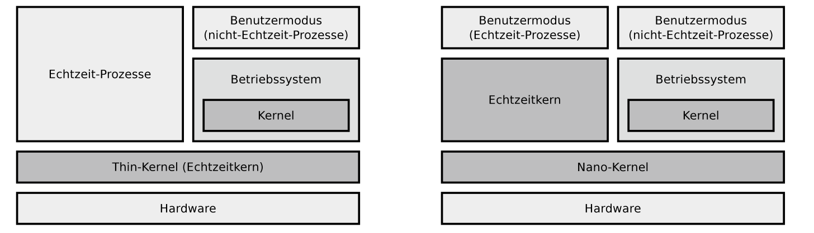
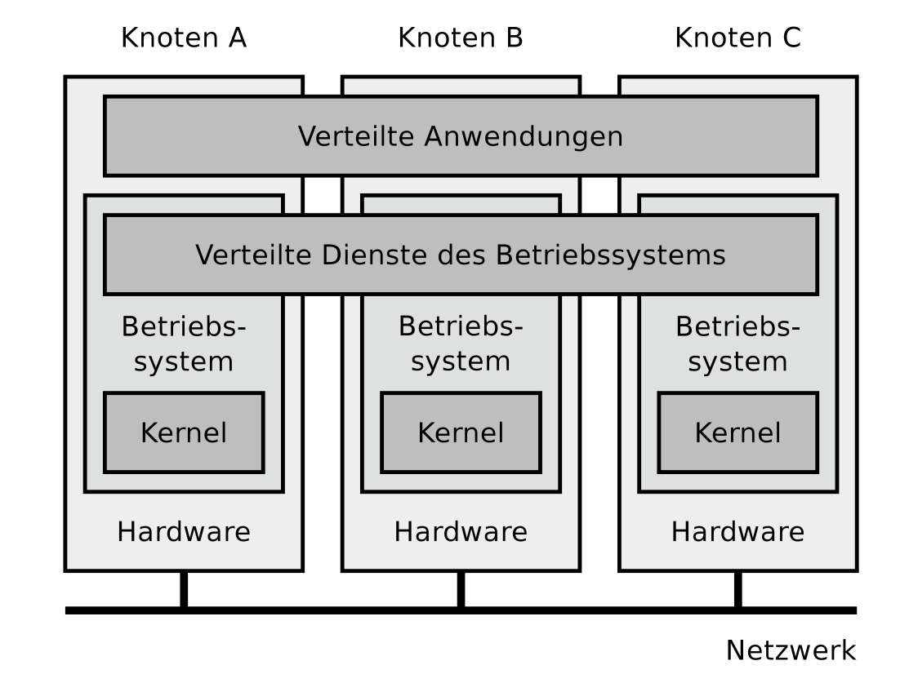
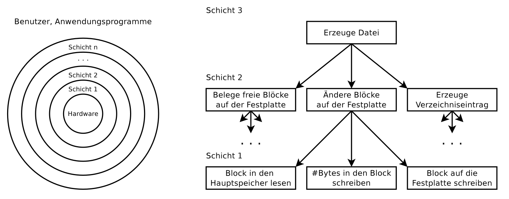

Kapitel:
Grundlagen der
Betriebssysteme
Speicherverwaltung
Grundlagen der
Betriebssysteme
Positionierung des Betriebssystems

Betriebsarten
Die Betriebssysteme lassen sich anhand der Betriebsarten Stapel-
betrieb und Dialogbetrieb, Einzelprogrammbetrieb und Mehrpro-
grammbetrieb sowie Einzelbenutzerbetrieb und Mehrprogramm-
betrieb klassifizieren.
- Stapelbetrieb
Stapelverarbeitung (englisch: Batch Processing) heißt auch Sta-
pelbetrieb oder Batchbetrieb. Bei dieser Betriebsart muss jedes
Programm mit allen Eingabedaten vollständig vorliegen, bevor die
Abarbeitung beginnen kann. Auch heutige Systeme ermöglichen
Stapelverarbeitung, zum Beispiel in Form von Batch-Dateien oder
Shell-Skripten. Speziell zur Ausführung von Routineaufgaben ist
diese Form des Stapelbetriebs ein nützliches Werkzeug. Üblicher-
weise ist Stapelbetrieb interaktionslos. Nach dem Start eines Pro-
gramms wird dieses bis zum Ende oder Auftreten eines Fehlers
ohne Interaktion mit dem Benutzer abgearbeitet. Ein Ziel des Sta-
pelbetriebs ist die maximale Prozessorausnutzung.
- Dialogbetrieb
Bei der Betriebsart Dialogbetrieb (englisch: Time Sharing), die
auch Zeitteilbetrieb heißt, arbeiten mehrere Benutzer an einem
Computersystem gleichzeitig und konkurrierend, indem sie sich
die verfügbare Rechenzeit des Hauptprozessors teilen. Eine Her-
ausforderung hierbei ist die faire Verteilung der Rechenzeit. Dieses
geschieht mit Hilfe von Zeitscheiben (englisch: Time Slices). Die
Verteilung der Zeitscheiben an die Programme kann nach unter-
schiedlichen Scheduling-Verfahren erfolgen.
Obwohl die Benutzer gleichzeitig über Terminals an einem
Computer interaktiv arbeiten, sind deren Programme durch den
Mehrprogrammbetrieb unabhängig vonein-
ander.
- Einzelprogrammbetrieb
Beim Einzelprogrammbetrieb (englisch: Singletasking) läuft zu
jedem Zeitpunkt nur ein einziges Programm.
Die quasi-parallele Programm- bzw. Prozessausführung heißt
Mehrprogrammbetrieb (englisch: Multitasking). Mehrere Pro-
gramme können gleichzeitig (bei mehreren Prozessoren bzw.
Rechenkernen) oder zeitlich verschachtelt (quasi-parallel) ausge-
führt werden. Die Prozesse werden in kurzen Abständen abwech-
selnd aktiviert. Dadurch entsteht der Eindruck der Gleichzeitigkeit.
Ein Nachteil des Mehrprogrammbetriebs ist das Umschalten von
Prozessen, welches einen Verwaltungsaufwand (Overhead) verur-
sacht.
- Mehrprogrammbetrieb
Mehrprogrammbetrieb ist trotz des Verwaltungsaufwand sinn-
voll, denn Prozesse müssen häufig auf äußere Ereignisse warten.
Gründe sind zum Beispiel Benutzereingaben, Eingabe/Ausgabe-
Operationen von Peripheriegeräten oder das Warten auf eine
Nachricht eines anderen Programms. Durch Mehrprogrammbe-
trieb können Prozesse, die auf ankommende E-Mails, erfolgreiche
Datenbankoperationen, geschriebene Daten auf der Festplatte oder
ähnliches warten, in den Hintergrund geschickt werden und andere
Prozesse kommen früher zum Einsatz.
Der Verwaltungsaufwand, der bei der quasiparallelen Abarbei-
tung von Programmen durch die Programmwechsel entsteht, ist
im Vergleich zum Geschwindigkeitszuwachs zu vernachlässigen.
- Einzelbenutzerbetrieb
Beim Einzelbenutzerbetrieb (englisch: Single-User Mode) steht
der Computer immer nur einem einzigen Benutzer zur Verfü-
gung. Es existieren Single-User-Betriebssysteme mit Single- und
mit Multitasking-Funktionalität. Beispiele für Betriebssysteme,
die ausschließlich Einzelbenutzerbetrieb bieten, sind MS-DOS,
Microsoft Windows 3x/95/98 und OS/2.
- Mehrbenutzerbetrieb
Beim Mehrbenutzerbetrieb (englisch: Multi-User Mode) kön-
nen mehrere Benutzer gleichzeitig mit dem Computer arbeiten. Die
Benutzer teilen sich hierbei die Systemleistung. Die Systemres-
sourcen müssen mit Hilfe geeigneter Scheduling-Methoden möglichst gerecht verteilt werden. Die verschiedenen
Benutzer müssen (durch Passwörter) identifiziert und Zugriffe auf
Daten und Prozesse anderer Benutzer durch das Betriebssystem
verhindert werden. Beispiele für Betriebssysteme, die Mehrbenutzerbetrieb
ermöglichen, sind Linux und andere Unix-ähnliche
Systeme, Mac OS X, sowie die Server-Versionen der Microsoft
Windows NT-Familie. Dazu gehören auch die Versionen Terminal
Server und MultiPoint Server.
8/16/32/64 Bit-Betriebssysteme
Jedes Betriebssystem arbeitet intern mit Speicheradressen einer
bestimmten Länge. Moderne Betriebssysteme werden üblicherweise
als 64 Bit-Betriebssysteme angeboten. Zahlreiche Linux-
Distributionen sowie mehrere Versionen von Microsoft Windows
sind speziell für ältere Hardware zusätzlich noch als
32 Bit-Betriebssysteme verfügbar. Ein Betriebssystem kann nur so
viele Speichereinheiten ansprechen, wie der Adressraum zulässt.
Darum kann ein 64 Bit-Betriebssystem mehr Speicher ansprechen
als ein 32 Bit-Betriebssystem. Die Größe des Adressraums hängt
Hardwareseitig allerdings vom Adressbus ab.
2^n wobei n für Bit-Betriebssystem steht -> So viele Speichereinheiten können adressiert werden
Echtzeitbetriebssysteme
Echtzeitbetriebssysteme sind Betriebssysteme die Mehrpro-
grammbetrieb mit zusätzlichen Echtzeit-Funktionen für die Einhaltung von Zeitbedingungen bieten. Wesentliche
Qualitätskriterien von Echtzeitbetriebssystemen sind die Reaktionszeit und die
Einhaltung von Zeitschranken (englisch: Deadlines).
Die existierenden Echtzeitbetriebssysteme können in die beiden
Gruppen harte Echtzeitbetriebssysteme und weiche Echtzeitbetriebssysteme unterschieden werden.

Architekturen von Echtzeitbetriebssystemen mit Thin-Kernel und
Nano-Kernel
Verteilte Betriebssysteme
Ein verteiltes Betriebssystem ist ein verteiltes System, das die Prozesse
auf mehreren unabhängigen Computern steuert. Die einzelnen
Knoten bleiben den Benutzern und deren Prozessen verborgen.
Das System erscheint als ein einzelner großer
Computer. Dieses Prinzip ist im Bereich der verteilten Systeme
auch unter dem Fachbegriff des Single System Image bekannt.

Architektur des Betriebssystemkerns
Der Betriebssystemkern (englisch: Kernel) enthält die grundlegenden
Funktionen des Betriebssystems. Er ist die Schnittstelle zur
Hardware des Computers.
Die grundlegenden Funktionalitäten sind bei allen Betriebssystemen
gleich. Zu diesen gehört die Bereitstellung von Systemaufrufen,
Funktionen zur Benutzerverwaltung und Prozessverwaltung
inklusive Festlegung der Ausführungsreihenfolge (englisch: Scheduling)
und Interprozesskommunikation, ein Prozessumschalter
(englisch: Dispatcher), die nötigen Gerätetreiber,
Funktionen zur Speicherverwaltung und Dateisysteme zur Verwaltung
von Dateien auf Speicherlaufwerken.
Jedes vollständige Betriebssystem muss die genannten Funktionalitäten
erbringen. Die Entwickler der Betriebssysteme haben
gewisse Freiheiten bei der Positionierung der entsprechenden
Funktionen. Diese können entweder vom Betriebssystemkern
selbst oder von Prozessen, die in diesem Kontext auch Dienst oder
Server heißen, außerhalb des Kerns erbracht werden. Dementsprechend
werden die drei Architekturen monolithischer Kern, minimaler
Kern und hybrider Kern unterschieden.
Eine konkrete Auswirkung der Positionierung ist, dass Funktionen,
die sich im Betriebssystemkerns befinden, vollen Hardwarezugriff
haben. Sie laufen im Adressraum des Kerns, dem sogenannten
Kernelmodus. Wird eine Funktion hingegen
außerhalb des Adressraums des Kerns ausgeführt, kann diese nur
auf ihren virtuellen Speicher, den sogenannten Benutzermodus,
zugreifen.
Schichtenmodell
In der Literatur ist es ein etabliertes
Verfahren, die Komponenten von Betriebssystemen mit Schichtenmodellen
zu visualisieren. Dabei werden die Betriebssysteme mit
ineinander liegenden Schichten logisch strukturiert. Die Schichten
umschließen sich gegenseitig und enthalten von innen nach außen
immer abstraktere Funktione.

Speicherverwaltung
Konzepte zur Speicherverwaltung
- Statische Partitionierung
Bei diesem Konzept der Speicherverwaltung wird der Hauptspeicher
in Partitionen gleicher oder unterschiedlicher Größe unterteilt.
Ein Nachteil dieses Verfahrens ist, dass zwangsläufig
interne Fragmentierung entsteht. Diese Form der Speicherverwaltung
ist somit ineffizient. Dieses Problem ist bei Partitionen
unterschiedlicher Größe weniger stark ausgeprägt, aber keinesfalls
gelöst. Ein weiterer Nachteil ist, dass die Anzahl der Partitionen
die Anzahl möglicher Prozesse limitiert.
Im Idealfall erhalten Prozesse eine möglichst passgenaue Partition,
um möglichst wenig interne Fragmentierung zu verursachen.
Werden Partitionen unterschiedlicher Größe verwendet, gibt
es zwei Möglichkeiten, um Prozessen Partitionen zuzuweisen. Entweder
verwaltet das Betriebssystem eine eigene Prozesswarteschlange
für jede Partition oder es verwaltet eine einzelne Warteschlange
für alle Partitionen. Ein Nachteil mehrerer Warteschlangen ist,
dass bestimmte Partitionen seltener oder eventuell sogar
nie verwendet werden.
- Dynamische Partitionierung
Bei diesem Konzept der Speicherverwaltung weist das Betriebssystem
jedem Prozess eine zusammenhängende Partition mit exakt
der benötigen Größe zu. Dabei kommt es zwangsläufig zu externer
Fragmentierung. Die Lösung dieses Problem ist
eine regelmäßige Defragmentierung des Speichers. Dieses ist aber
nur dann möglich, wenn die Partitionen verschiebbar sind. Verweise
in Prozessen dürfen durch ein Verschieben von Partitionen
nicht ungültig werden.
- Buddy-Speicherverwaltung
Bei der Buddy-Speicherverwaltung gibt es zu Beginn nur einen
Bereich, der den gesamten Speicher abdeckt. Fordert ein Prozess
einen Speicherbereich an, wird dessen Speicherkapazität zur
nächsthöheren Zweierpotenz aufgerundet und ein entsprechender,
freier Bereich gesucht. Existiert kein Bereich dieser Größe, sucht
das Betriebssystem nach einem Bereich doppelter Größe und unterteilt
diesen in zwei Hälften, sogenannte Buddies. Eine Hälfte wird
daraufhin dem anfordernden Prozess zugewiesen. Existiert auch
kein Bereich doppelter Größe, sucht das Betriebssystem einen
Bereich vierfacher Größe, usw.
Wird ein Speicherbereich freigegeben, prüft das Betriebssystem,
ob sich zwei Hälften gleicher Größe wieder zu einem größeren
Speicherbereich zusammenfassen lassen. Es werden aber nur
zuvor vorgenommene Unterteilungen rückgängig gemacht.
Speicheradressierung in der Praxis
Eine der Aufgaben eines Betriebssystems ist,
die Zugriffe der Prozesse auf den Speicher zu organisieren.
Zwei Konzepte der Speicheradressierung - Real Mode und Protected Mode
sind in der Praxis etabliert.
- Real Mode
Der Real Mode, der auch Real Address Mode heißt, ist eine von
zwei möglichen Betriebsarten x86-kompatibler Prozessoren. Dieses
Konzept der Speicheradressierung realisiert einen direkten
Zugriff auf die Speicheradressen des Hauptspeichers durch die
Prozesse. Da der Real Mode keinen Zugriffsschutz
bietet, kann jeder Prozess auf den gesamten adressierbaren Speicher
zugreifen. Darum ist dieses einfache Konzept ungeeignet für
Betriebssysteme mit Mehrprogrammbetrieb.
Zudem wäre das Konzept ungeeignet, um einen für die Prozesse
transparenten Auslagerungsspeicher (englisch: Swap ) zu realisieren.
Ein weiterer Grund, warum der Real Mode für moderne
Betriebssysteme ungeeignet ist, ist die Beschränkung des adressierbaren
Hauptspeichers auf maximal 1 MB. Diese Einschränkung
geht zurück auf den maximaler Speicherausbau eines Intel
8086 Prozessors, dessen Adressbus nur 20 Busleitungen umfasst.
- Protected Mode und virtueller Speicher
- Seitenorientierter Speicher (Paging)
- Segmentorientierter Speicher
(Segmentierung)